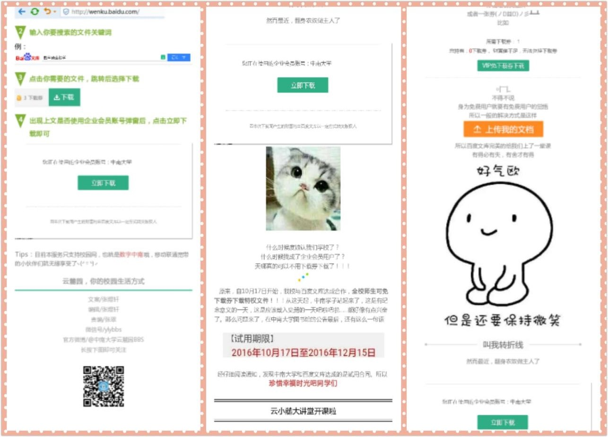

一、云麓园BBS简介
中南大学云麓园 BBS 站，于1997年3月21日正式开通，现已经历了19年风雨的洗礼。这19年里，在学校领导的关怀指导下，经过历任站务组的辛勤工作，在各位版主和广大站友的支持下，云麓园 BBS 站通过自身的不断发展，已经成为一个良好的学习、学术、技术交流网络社区，引领中南学子的网络思想积极健康发展的方向标，不仅是一个令中南大学学子引以自豪的网上家园，更成为湖南地区最有名气和声望的高校BBS之一。云麓园BBS受邀参加2009年中国首届高校BBS联盟站长年会，在全国高校BBS中崭露头角。
目前，云麓园BBS的注册用户累计已达到146734位，而且每天还会有许多的新朋友加入到我们的队伍中来。每日的访问量超过 10000 人次，实时在线人数超过3500人次。2012年5月，云麓园的帖子总数已突破100万，目前统计有总共1706552篇帖子。云麓园 BBS 站的讨论范围涵盖了电脑技术、学术科学、艺术文化、体育运动、休闲娱乐、聊天交友、知性感性、社会信息等诸多领域，为校内外站友提供了良好的信息交流平台。
在云麓园，你总可以找到和你有共同爱好的虫子。因为高校的背景，所有的人都带有一种特别的真诚和热情，这是bbs最珍贵的情谊之一。
云麓园BBS现下属为中南大学学工部网络文化服务中心运营部。日常工作主要负责运营旗下的BBS、微博和微信平台。
云麓园分为技术组、版务组、外宣组、美工组四个部分，并分别有着各自的职能：
技术组负责论坛，也就是BBS网站的技术维护与开发，如解决网站瘫痪、部分功能不能使用等问题；
版务组负责论坛发帖及回复的审核，并负责论坛警戒、清除不当言论和用户，同时负责微信、微博的后台管理及文章推送发布等；
外宣组负责线上、线下活动的策划，对外的推广宣传，论坛礼品中心的管理，与校外商家的外联洽谈等；
美工组负责论坛进站图、论坛用户界面、活动海报、展板及日常用图等出图，还有活动摄影与剪辑。
在当今新媒体理念的日益冲击下，云麓园开始将微信、微博公众平台也作为核心品牌来推广，以重心放在微信公众号和论坛为发展机制，将一直秉承为学生服务的生存理念，打造学生自己的生活方式，形成具有生命力的运营模式。
二、云麓大事记
- 1997年3月21日，云麓园BBS开通，使用BBS系统为Firebird BBS,只有Telnet服务。第一任站长SYSOP姓名为Yi XiaoHong。在此后的两三年里，云麓园系统历经三次比较大的升级，开通了web服务，多个版面得到发展，并有多次网友聚会。
- 2001年夏天意外发生一次关站，尚在发展中的BBS沉寂了一段时间。
- 2002年1月1日，云麓园重新上线，采用 Firebird BBS系统，在Linux操作系统下运行，支持telnet和web两种方式讨论。第一任站长为Coolwinter。云麓重新上线，很快恢复了人气且比以前更有发展。
- 2003年9月，开始Firebird系统向smthbbs系统的升级。云麓园在广大网友的关心下不断取得新的进步，在校园内外的影响力不断提升。
- 2005年和2006年期间，云麓园更为热闹了。2006年春举办了云麓9周年站庆大型晚会。
- 2007年，云麓园站务组与中勤在线、湖南大学生信息港、马列网合并，业务独立。
- 2009年末，随着全新的服务器采购回来，在站长win2525的带领下，站务组开始上马discuz!。
- 2010年3月，在迎来云麓园站庆的13年之际，论坛全新升级改版，内容更加丰富多彩，令人耳目一新。新版云麓园包括“云麓水吧”、“花花贴图”、“笑话分享”、“音乐影视”、“鹊桥征友”、“求职招聘”、“跳蚤市场”、“云麓知道”、“报考中南”等知名论坛版块。
- 2011年初，云麓园BBS更换DX1.5系统，集合了门户、群组、家园等新内容。云麓园的日发帖量和在线会员都进一步增加。4月，云麓园举办了14周年站庆线下Party活动。
- 2015年举办了18周年站庆游园会活动，在广大师生和园友之中获得了极大地好评和反响。
- 2017年为迎接云麓园站庆20周年，论坛将再次进行版面的美化和功能的优化设计。如下论坛改版规划图：

三、论坛
中南大学云麓园BBS站论坛，是由中南大学学工部组建，于1997年3月21日正式开通，是一个优秀的校园交流服务平台，集学习交流、信息发布、技术探讨、娱乐灌水、资源共享等为一体。如今的云麓园BBS，不仅是一个令中南大学学子引以自豪的网上家园，更成为湖南地区最有有名气和声望的高校BBS论坛之一。
云麓园 BBS 站的讨论范围涵盖了电脑技术、学术科学、艺术文化、体育运动、休闲娱乐、知性感性、社会信息等诸多领域，为校内外网友提供了良好的信息交流平台。
我们的运营思想：云麓园BBS站为中南大学官方论坛，为了促进校外学子了解学校情况以及校内学子文化、生活的交流，我们力求将云麓园BBS站建设成为文明、健康、全面、向上的良好交流平台，并成为中国高校知名BBS。
云麓园BBS大致结构
云麓园BBS共有10个大区，各区又分为若干版面，便于网友根据文章性质查看或发表。
- 本站系统区：包括站务交流、公告发布、版主申请、版主培训、网友投诉、新手求助、原创作品发布等版面。
- 新闻信息区：包括校园信息、新闻快讯、求职招聘、跳蚤市场、招领启事、车票交通、大一新生等版面。
- 中南大学区：各二级学院与部分社团。
- 乡情校谊区：爱我中华以及上交、湖大、武大等高校版。
- 电脑技术区：程序设计、软硬件、数码、网络、Linux等版面。
- 学术科学区：自然科学、经济论坛、考研之路、英语角等。
- 文化艺术区：读书、影视、音乐、广告、美食等。
- 体育休闲区：体育运动、旅游、电脑游戏、笑话、贴图以及网友最为钟爱的灌水区。
- 知性感性区：回忆似水流年、单身絮语、谈情说爱、鹊桥征友、有情天地、星座祝福等。
- 校务信箱区：由于管理人员未到位，该区暂时关闭中。
BBS管理团队
云麓园BBS的常规事务由云麓园BBS站务组全权处理，并无其他机构涉入。站务组包括：
- 运营总监一名：负责本站所有运营事宜。
- 站务总监一名：负责本站站务的监督考核、工作分配等事务。
- 版面站务若干：负责本站的日常监管以及版面调整等。
- 技术站务若干：负责本站的技术维护与更新等。
- 美工站务若干：负责本站有关图片、网页的设计、维护与更新。
- 外宣站务若干：负责商家外联、活动策划、论坛推广。
2009年末，随着全新的服务器采购回来，在站长win2525的带领下，站务组开始上马discuz!。
2010年3月，在迎来云麓园站庆的13年之际，论坛全新升级改版，内容更加丰富多彩，令人耳目一新！ 新版云麓园包括“云麓水吧”、“花花贴图”、“笑话分享”、“音乐影视”、“鹊桥征友”、“求职招聘”、“跳蚤市场”、“云麓知道”、“报考中南”等知名论坛版块。
四、微信公众号
中南大学云麓园微信公众号于2013年5月注册，2014年9月开始正式运营。拥有粉丝7100+，是中南校内颇具影响力的官方账号。并推送过许多优秀作品，获得了新生及其家长的一致好评，如下几篇推送：
新生开学季期间推出的
《中南新生防骗锦囊，请速速收好》
《终于等到你，中南迎新大招来袭》
《喏，你要的超完整新生军训攻略》
在九三阅兵期间推出的《指尖护卫大阅兵》系列、国庆当天推出的《颜值+实力，祖国，让我怎么不爱你》等文章都收到了良好的反响。
除了针对校内学生的实用信息和正能量宣传，推出的《你之所以回不了家，是因为你没有在中南》、《我想把中南唱给你听》、《如何才能避免早起毁一天》
《重磅|中南学子不用愁百度文库下载券了！》
《勇夺金银铜！三位中南学子获得里约奥运会奖牌！》
等图文都收到了良好的反响。在向师生提供实用信息、宣传学风建设等方面发挥了重要的作用。
以下是推送反响较好的图文详情。

五、微博
云麓园BBS是中南大学官方论坛，其官方微博“中南大学云麓园BBS”建于2012年。发展至今，以发布学校重要信息为主，兼以分享日常校园生活，逐渐成为一个全面而多领域的新媒体平台。定位从学生角度出发，风格多样，以轻松活泼为主，固定主体内容为失物招领、讲座信息。并随时分享校园、食堂、宿舍新鲜动态以及各大活动等实况。并在各大活动中引入直播的新形式，在关注者中取得了良好的反响。
兼具传播校园信息、便利学生、讨论社会热点和为学生发声等功能。纳入学工部管理以来，担负起传播正能量的功能，总体来说，云麓园BBS微博正在朝着更加丰富而全面，更加严谨而创新的方向发展。
六、活动
1.站庆活动
云麓园BBS的站庆活动是包活整个全国的高校BBS都会举办的一项传统活动，站庆活动旨在庆祝云麓园BBS的生日，为广大园友提供一个线下交流的平台，为站务及园友提供一个展示自我的平台，并通过这种互动拉近和园友们的距离，答谢和鼓励更多的园友们，将云麓园文化深植于高校大学生的心中，并借此活动宣传云麓园,也是为广大的BBS用户提供线下的互动与交流，丰富BBS的交流方式和内容。
a.17周年站庆
b.19周年站庆
而在站庆的时候，必不可少的就是站衫了，站衫是由美工组设计，用来纪念那一次的站庆活动而定制的T恤衫。
2.其他活动
当然，除了站庆活动之外，我们每年还要举办三到四次面向全校师生的活动，为丰富同学们的学余生活和加深同学们对网络文化的正确认识。a.“双旦”趣味彩绘活动
b.定向越野活动
七、周边产品
1.吉祥物：云小鹿
云小麓是中南大学官方论坛云麓园BBS的吉祥物，它诞生于岳麓山之下，有着温暖的黄色皮毛，清澈沉静的蓝色眼睛，以及佩戴者象征着热情与力量的红围巾，显示了它是一只健康活泼、乐观向上的小鹿。
2.明信片
3.卡贴
八、对外交流活动
2015年11月7日-8日，云麓园受邀参加了西安交通大学20周年站庆交流，与其他十余所兄弟高校一起，就高校论坛的发展进行了深入的探讨和交流。
2016年4月4日，云麓园受邀参加了华中科技大学20周年站庆活动，就互联网环境下新媒体发展态势和高校论坛如何应对等相关话题进行了讨论。
高校论坛之间的交流属于高校交流的一个部分，云麓园在与其他兄弟高校的交流中也加深了彼此之间的联系，为工作的更好开展起到了积极的作用。这对于云麓园BBS甚至整个中国的高校的BBS都会有着积极地推进作用。